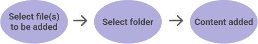
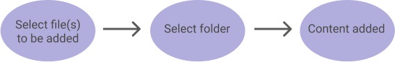
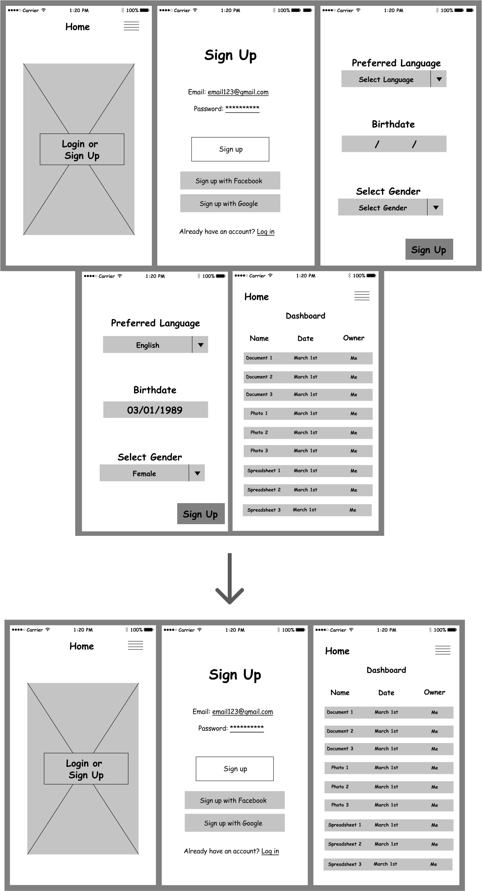
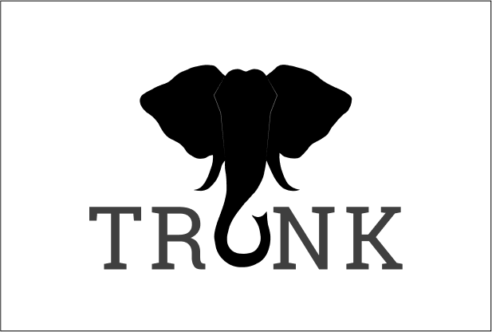
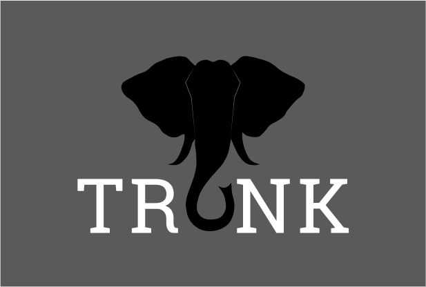
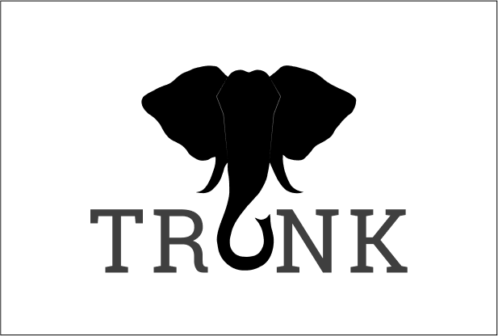
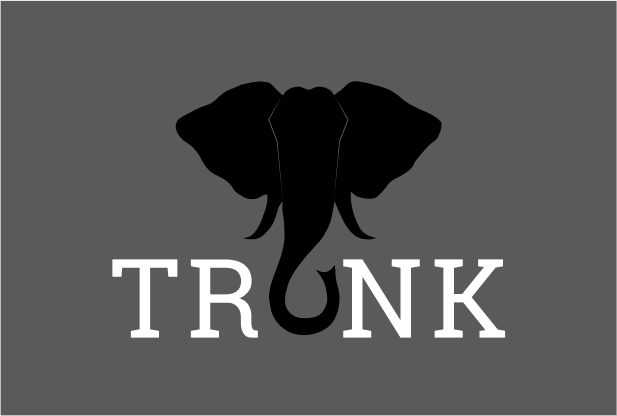

TRUNK
The one stop shop cloud storage app.

Many cloud storage apps available today do not address all of their
users needs which forces users to utilize multiple apps. We wanted to
solve this problem and create an app that will allow users to use just our app
instead of juggling several different ones for different purposes.
I managed this project from start to finish, beginning with just a concept
and ending with a finished prototype.
Along the way, I performed research, created
wireframes and mockups, with Figma & Sketch,
decided on all branding and design, and completed the
project by creating a prototype using Invision.
User Research, Prototyping, Visual Design, Branding, Information Architecture, Interaction Design
User surveys, personas, competitive analysis, user stories, user flows, wireframes, prototype, user testing, visual design, style guide
Our task was to create a cloud storage app that would be a major competitor to apps like Google Drive, Pinterest, etc. The primary features were to save web content, organize & create content, upload files, and allow users to collaborate. Our goal was to combine these features and more to create a compelling and user friendly cloud storage app.
Our solution was to create a simple, user friendly cloud storage app called Trunk that allows users to use our platform for all of their needs. Our research indicated two major findings. First, many people wanted a collaboration feature. Second, the main concern with cloud storage is security. Using this information, we designed an attractive and useful app that will become a main competitor for the cloud storage apps available.
Trunk was developed out of desire to create a cloud storage app that would combine the popular features of other apps into a simple but highly useful one to serve all of our users' cloud storage needs. We started with that idea and built Trunk with the following steps.
Before starting our design, we wanted to ensure that we were designing what the users want. In order to find which features are most useful, we created a cloud storage survey that asked whether respondents used cloud storage, why or why not, which features they preferred, and more.
82%
use cloud storage
92.9%
want to share content
85.7%
want to access files remotely
92.9%
mostly use file & photo storage
82%
find a collaboration feature useful
95.8%
share files via link or social media
After our survey data was complete, we went on to perform
a competitive analysis
of other current cloud storage apps for
their strengths and flaws. We conducted a SWOT analysis of
two different cloud storage apps-- Google Drive and Dropbox.
Their primary strengths where
brand name recognition, automatic saving, having nothing to download, and no cost
whereas their primary weaknesses were the inability to save web content and limited security options. We took these results into account when deciding on
our app structure.
We wanted to understand our users to make sure we were designing Trunk with them in mind, so we created user personas.
32 years old | Rockville, MD
Robert, a current user of Google Drive, wants to have his assignments stored in the cloud. He needs to share his assignments with professors and collaborate on group projects with his peers.
• Backing up assignments
• Collaborating with his peers
• Sharing assignments with his professors
• Unable to easily save articles & resources
• Wants to have his files in the same place
32 years old | Charleston, SC
Lily, a current user of Google Drive, Pinterest, and Evernote, is planning her wedding and is all about organization. She organizes her calendar, inspirations, guest list, etc. with multiple apps. She wants to keep everything in one place.
• Successfully plan her wedding
• Have all her files in one place
• Finish everything on her to-do list
• Has to use multiple programs for organization & planning
• Can't easily share files with her fiance
We then created user stories to determine which actions are high, medium, and low priority. Some high priority user stories included:
• As a new user, I want to sign up for an account
• As a returning user, I want to create new documents
• As a returning user, I want to share my files with others
• As a returning user, I want to access my files from anywhere
• As a returning user, I want to upload files
These user stories were then converted into user flows to map each process from point A to point B.

After we had completed our research, we were ready to begin designing. We used our flow diagrams to create wireframes for each of our high priority user stories creating a clickable prototype in which our users act out all of the high priority actions.
We wanted to test this prototype to make sure that our proceses were user friendly, so we conducted usability tests asking our participants to create an account, upload a document, and organize a piece of content.
| 33% | wanted the ability to sort the dashboard |
| 66% | wanted to organize content by selecting the file first |
| 33% | thought we should rename "Add New" to "Upload New" |
| 100% | felt that the sign up process was too long |
The primary change we made based on this feedback was to change the process of organizing content to to start by clicking the file and selecting the folder instead of clicking the folder and selecting which files to add.
 Another key change that we made was to shorten the sign up process. Originally, we asked participants to enter their language, birth date, and gender
We moved forward to create mockups of our designs. First, we needed to
decide on solid branding for our app which first needed a name
and a logo. The name "Trunk" works in two ways: Elephants have a reputation
for having a long memory, and a trunk is used for storage. Storage and
memory together are exactly what we’re creating.
We then focused on our logo,
which had many different iterations but eventually became the silhouette of an
elephant with the trunk creating the letter U in Trunk. My original sketches and
finished logo are below.
 



With our logo in place, we moved on to create a color scheme, typography, buttons, and much more. We created a comprehensive style guide to organize all of these design decisions. Using this branding, we moved forward to create our mockups.
Keeping in mind our style guide and branding decisions, we went forward to design 121 individual mockup screens that would become our prototype. These were more colorful and attractive than our wireframes. After many drafts and changes, we created our second clickable prototype.
When we were finished, we conducted another usability test to see how potential users would interact with our finished design.
| 33% | wanted the option to sort dashboard in different ways |
| 66% | preferred a darker background |
| 33% | organized content by selecting the folder first |
| 66% | organized content by selecting the file first |
We took this feedback into account and incorporated them in our design. The most critical change was to utilize both options for organizing content and add an option to sort dashboard content.
After many drafts and multiple tests, our final prototype was ready.
Throughout this project, I learned that creating the skeleton
of a project is the arguably the most important part, as without a solid foundation, the project
collapses. Everything needs to be thought out in detail and the designs need to
be consistent throughout to make a user friendly experience.
At the outset, we were doubtful that there was need for such a product or that
we’d be able to create a worthy competitor for the current cloud apps available.
However, after all of our hard work, we were pleasantly surprised to find that
we did find the right combination of features and feel confident in Trunk’s
potential.